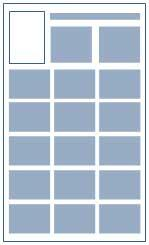
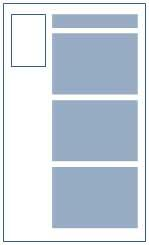
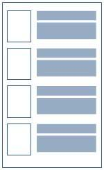

The purpose of personas is to create reliable and realistic representations of your key audience segments for reference. These representations should be based on qualitative and some quantitative user research and web analytics. Remember, your personas are only as good as the research behind them. Effective personas:
- Represent a major user group for your website
- Express and focus on the major needs and expectations of the most important user groups
- Give a clear picture of the user's expectations and how they're likely to use the site
- Aid in uncovering universal features and functionality
- Describe real people with backgrounds, goals, and values
Benefits of Personas
Personas help to focus decisions surrounding site components by adding a layer of real-world consideration to the conversation. They also offer a quick and inexpensive way to test and prioritize those features throughout the development process. In addition they can help:
- Stakeholders and leaders evaluate new site feature ideas
- Information architects develop informed wireframes, interface behaviors, and labeling
- Designers create the overall look and feel of the website
- System engineers/developers decide which approaches to take based on user behaviors
- Copy writers ensure site content is written to the appropriate audiences
Best Practices for Developing Personas
Personas development belongs at the beginning of the project, as personas can inform site functionality, help uncover gaps, or highlight new opportunities.
You may develop one or more personas for a project but limit yourself to the main audiences for the site. For any given project, creating only three or four personas is best. Remember that it is better to paint with a broad brush and meet the needs of the larger populations than try to meet the needs of everyone. The goal of personas is not represent all audiences or address all needs of the website but instead to focus on the major needs of the most important user groups.
To ensure your personas are accurate representations of your users and have the support of your stakeholders throughout the process, you should:
- Conduct user research: Answer the following questions: Who are your users and why are they using the system? What behaviors, assumptions, and expectations color their view of the system?
- Condense the research: Look for themes/characteristics that are specific, relevant, and universal to the system and its users.
- Brainstorm: Organize elements into persona groups that represent your target users. Name or classify each group.
- Refine: Combine and prioritize the rough personas. Separate them into primary, secondary, and, if necessary, complementary categories. You should have roughly 3-5 personas and their identified characteristics.
- Make them realistic: Develop the appropriate descriptions of each personas background, motivations, and expectations. Do not include a lot of personal information. Be relevant and serious; humor is not appropriate.
Questions to Ask During Persona Development
The following questions and areas of discussion will help you construct a snapshot of the visitors to your site.
| Objective | Questions |
|---|---|
|
Define the Purpose/ Vision for the Site |
|
| Describe the User |
Personal
Professional
Technical
|
| User Motivation |
|
Elements of a Persona
Personas generally include the following key pieces of information:
- Persona Group (i.e. web manager)
- Fictional name
- Job titles and major responsibilities
- Demographics such as age, education, ethnicity, and family status
- The goals and tasks they are trying to complete using the site
- Their physical, social, and technological environment
- A quote that sums up what matters most to the persona as it relates to your site
- Casual pictures representing that user group
Organize persona information in an easy to read, logical format. Depending on the amount of user research you were able to conduct and the nature of your organization, personas may be laid out in a number of ways, including:
| The Narrative | The Table | The Quick-and-Dirty |
|---|---|---|
|  |  |  |
| Best for stakeholders who are not so concerned about the technical details of user needs. | Best for designers who need an easy way to compare designs to user needs. | Best in situations where personas lack sufficient research. |
Source: Dan Brown
Example Persona
Some personas are incredibly detailed, whereas others simply offer a brief sketch of each type of user. Here is an example of a portion of a larger persona developed by the U.S. Department of Agriculture's (USDA) Economic Research Service (ERS).
|
Persona: |
USDA Senior Manager Gatekeeper |
|
|---|---|---|
|
Photo: |
|
|
|
Fictional name: |
Matthew Johnson |
|
|
Job title/ |
Program Staff Director, USDA |
|
|
Demographics: |
|
|
|
Goals and tasks: |
He is focused, goal-oriented within a strong leadership role. One of his concerns is maintaining quality across all output of programs. Spends his work time:
|
|
|
Environment: |
He is comfortable using a computer and refers to himself as an intermediate Internet user. He is connected via a T1 connection at work and dial-up at home. He uses email extensively and uses the web about 1.5 hours during his work day. |
|
|
Quote: |
“Can you get me that staff analysis by Tuesday?” |
|

Persona developed by the U.S. Department of Agriculture's (USDA) Economic Research Service (ERS).
References
-
Communicating Design: Developing Web Site Documentation for Design and Planning,
by Dan Brown, 2007 -
GetElastic

- Information Architecture: Blueprints for the Web, by Christina Wodtke and Austin Govella, 2009
-
StepTwo Designs
-
Personas: The Foundation of a Great User Experience by Kevin O’Connor
-
Using Proto-Personas for Executive Alignment by Jeff Gothelf